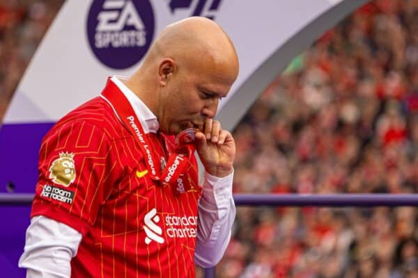
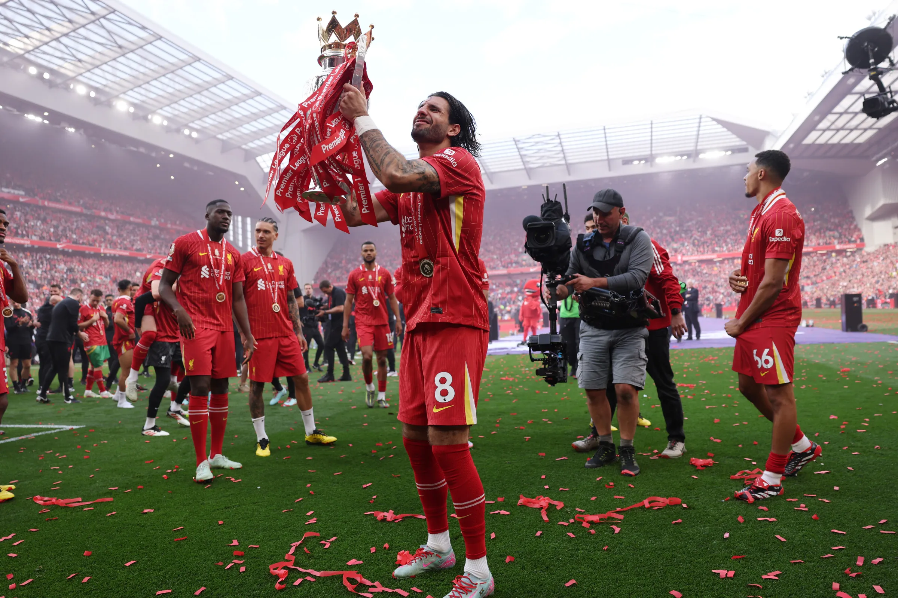

Arne Slot prende il posto di Klopp senza stravolgere la squadra: meno caos, più possesso palla e una difesa solida. Il Liverpool va subito in testa alla Premier League e non la lascia più, vincendo il suo ventesimo campionato, come il Manchester United. In Champions League chiude al primo posto il girone unico, ma esce agli ottavi ai rigori contro il PSG; in Carabao Cup perde la finale contro il Newcastle.
Mercato: l'estate porta solo Federico Chiesa dalla Juventus e l'accordo per il portiere Giorgi Mamardashvili, che arriverà l'anno successivo. Il vero rinforzo è Ryan Gravenberch, spostato da Slot davanti alla difesa. In uscita partono solo seconde linee, come Fábio Carvalho e Sepp van den Berg.

Champions League
Ottavi di finale

Supercoppa UEFA
Non partecipante

Mondiale per Club
Non partecipante

Premier League
Vincitore

FA Cup
Sedicesimi (4T)

Carabao Cup
Finalista

Community Shield
Non partecipante
Sito realizzato per l'esame di Reti di Calcolatori e Principi di Cybersecurity - Università di Trieste
Foto della Champions League e della FA Cup: Wikimedia Commons.
Marco Barsoum -